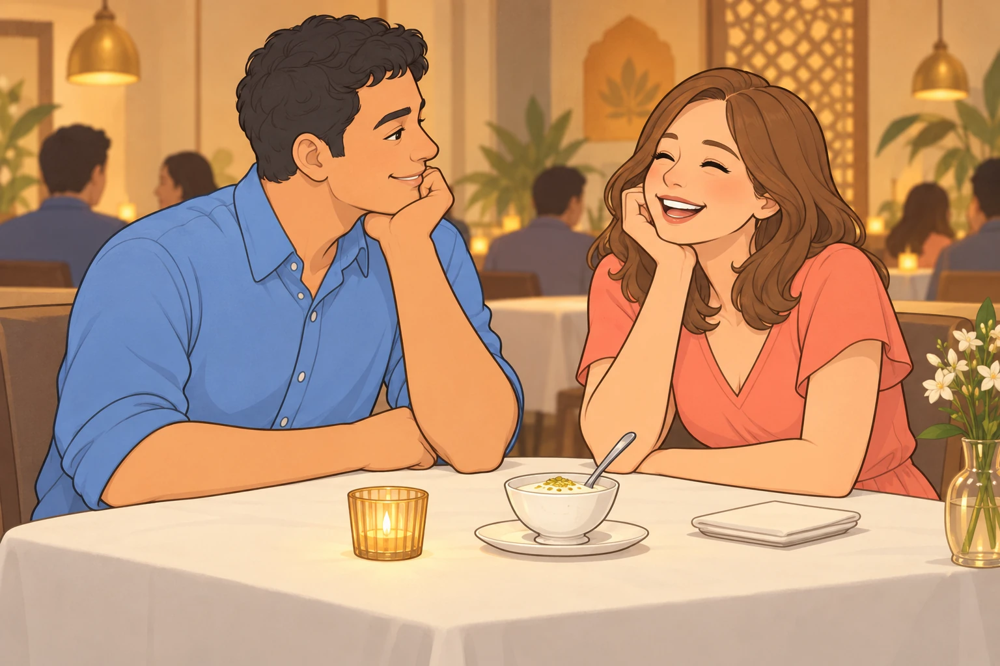

The morning sun painted Austin in shades of gold as Sagar loaded the last of the bags into the car. Neet stood at attention by the trunk, supervising with the gravity of a general inspecting troops before battle.
"That's the treat bag," Neet observed to Buddy, who sat nearby with his tail swishing contentedly across the driveway. "Third most important item, after us."
"What's second?" Buddy asked.
"Water bowl, obviously."
Buddy counted the proposed order again. "We’re two dogs."
"Joint first."
"Of course."
Heather emerged from the house carrying a small cooler, and both dogs immediately straightened, tails accelerating to helicopter speeds. She smiled at them with that gentle warmth that made everything feel right in the world. "Ready for an adventure, my sweet boys?"
Neet would have answered, but Sagar appeared beside her with the keys. Buddy stood before Neet did, determined to get his usual seat before the general occupied all of it.
"Houston awaits," Sagar announced, opening the back door with a flourish. "Your chariot, noble hounds."
The Journey Begins
The highway stretched before them like a ribbon through Texas, and Neet pressed his nose to the window, watching the landscape blur past. Heather sat between him and Buddy in the back seat, one hand absently stroking Neet's ears while the other rested on Buddy's head. The rhythm of Sagar's steady driving from the front seat created a peaceful cadence that made Buddy drowsy.
"I smell something," Neet announced suddenly, his nose twitching with such violence it made his whole face wiggle.
"You always smell something," Buddy replied without opening his eyes.
"No, this is important smelling. This is... this is..." Neet's eyes went wide. "Buddy. BUDDY. It's Buc-ee's."
Now Buddy's eyes opened. "The legendary Buc-ee's?"
"The very same."
Both dogs had heard tales of Buc-ee's— that magnificent temple of Texas excess where the bathrooms were cleaner than most houses and the snack selection could make a dog weep with joy. As Sagar took the exit, the giant beaver mascot loomed into view like a benevolent deity welcoming pilgrims.
"We're stopping to charge the car," Sagar explained, catching Neet's vibrating excitement in the rearview mirror. "Fifteen minutes."
Fifteen minutes at Buc-ee's was like fifteen minutes in heaven, except heaven probably had less beef jerky.
While the car charged, Sagar and Heather took the dogs for a quick walk around the grounds. Neet executed what he considered an extremely thorough perimeter check, which mostly involved sniffing every single trash can (seventeen in total, he counted) while Buddy trotted alongside Heather, content to simply be near her.
"Do you think they have a squirrel section?" Neet asked hopefully.
"Why would a gas station have a squirrel section?"
"They have everything else."
Buddy steered toward a patch of shade. Neet returned to the last trash can. Buddy waited, one paw already pointing toward the shade, while Neet checked whether the last dog had left an address.
When they returned to the car, Sagar carried a small bag. Both dogs' noses went into overdrive.
"Beef jerky?" Neet whispered.
"I think so," Buddy confirmed, his tail betraying his calm demeanor.
"Just a small snack for later," Sagar said.
Buddy sat very straight to show that he understood waiting. His eyes followed the bag down, up, and into Sagar’s other hand. Heather watched him, then moved the cooler. Buddy did not blink.
"No fooling that one," she said.

The Temple Stop
An hour later, the Houston skyline began to rise in the distance like a kingdom emerging from the plains. Buddy felt Heather's energy shift— she sat up straighter, her hand moving to gently squeeze Sagar's shoulder from behind.
"Almost there," she said softly, and something in her voice carried that particular note of reverence that made Buddy think of sacred things.
When they pulled into the BAPS temple parking lot, even Neet fell silent. The building rose before them in pristine white marble, so beautiful it seemed to shimmer in the afternoon sun.
"Magnificent," Heather breathed, and Buddy heard in that single word her soul speaking.
"We’ll take turns," Sagar said. The climate control stayed on; Heather remained with the dogs during his visit, then Sagar stayed during hers.
Neet watched each human take the path toward the temple entrance. "Why do they look different?" he asked.
Buddy understood what he meant. There was something about the way they moved— Heather's steps measured and graceful, Sagar's bearing somehow even more regal than usual. "Sacred ground," Buddy said simply. "They're honoring it."
"With their walking?"
"With everything."
Twenty minutes later, both visits complete, the humans opened containers that smelled like heaven had opened a restaurant. Both dogs leaned toward the bags.
"Gujarati thali," Heather announced, settling back into her seat. "And look what your king found— rose and pistachio lassi!"
Sagar passed her the drink. Buddy checked her other hand for anything that might be his.
"That lassi smells pink," Neet observed.
"How can something smell pink?"
"I don't know, but it does. Pink and... fancy."
Heather took a sip and actually sighed with happiness. "This is perfect. You always know exactly what I love."
From the driver's seat, Sagar's quiet "Always" carried the weight of a promise that Buddy felt certain extended far beyond lassi.
The Airbnb Incident
The Airbnb was a charming little place in a quiet neighborhood, and Sagar had just inserted the key when both Neet and Buddy heard it.
Woof.
It came from inside, muffled but unmistakable.
Neet's ears shot up so fast Buddy heard them whoosh. "Did you hear—"
Woof. Woof.
"Oh, it's ON," Neet declared, his chest puffing up.
"Maybe we should be diplomatic—" Buddy started, but Neet was already launching into full defense mode.
"WOOF! WOOF WOOF WOOF!"
The dog on the other side responded in kind, and suddenly they were engaged in the ancient canine tradition of the Bark Contest— that timeless battle of wills conducted through doors and walls, signifying everything and nothing.
"WOOF WOOF WOOF!" Neet proclaimed. This is MY family and MY Airbnb and MY side of this door!
"WOOF WOOF!" came the response. Yeah? Well this is MY side of the door!
"Neet," Sagar said calmly, though Buddy detected the slightest hint of amusement in his voice. "Stand down, warrior."
"But Sagar—"
"Buddy, can you talk some sense into your brother?"
Buddy sighed. "Neet, you're barking at a door. You've established dominance over... wood."
"It's the principle, Buddy."

The barking from the other side had devolved into slightly confused woofs, as if the other dog was wondering why they were still doing this.
Heather knelt down, and both dogs immediately quieted, drawn by the gentle authority she wielded as naturally as breathing. "Sweet Neet," she said, stroking his head, "let’s get your blanket inside. You can inspect the door afterward."
Neet glanced at the blanket, then back at the door. Buddy had already chosen the blanket. He stood close enough for his nose to touch its folded edge.
"You’re abandoning the perimeter."
"I’m securing the soft part."
"Fine," he grumbled. "But I won the contest."
"Undefeated champion," Buddy agreed, because some things were more important than being right.
The Park That Wasn't
Evening painted Houston in purple and orange as they set out for the park. Sagar drove while Heather navigated from her phone, and the dogs lounged in the back seat, contentedly tired from the day's adventures.
"Take the next left," Heather instructed.
"Left here?"
"Yes— wait, no. Right. I mean right. The turn is left but I meant... turn right?"
Buddy and Neet exchanged glances. This sounded suspiciously like the beginning of one of those human moments.
Fifteen minutes later, they were still driving.
"The park is definitely close," Heather said with less certainty than before.
"We've passed that gas station three times," Neet whispered to Buddy.
"I'm aware."
"Should we tell them?"
"How would we tell them, Neet?"
"Excessive meaningful barking?"
Buddy stopped rising whenever he saw grass. On the next circuit he watched the same bench pass the window and gave it a small, disappointed nod.
"Lovely bench," he said. "I feel we’re getting to know it."
Another fifteen minutes crawled by. The park, it seemed, existed in some quantum state— simultaneously close and impossibly far, protected by the ancient magic of No Available Parking.
"Every spot is taken," Sagar observed as they circled the park for the fourth time. "It's like the whole city had the same idea."
"I'm sorry," Heather said, and Buddy heard genuine distress in her voice. "I thought this would be nice for the boys."
From the front seat, Sagar reached over and took her hand. "It is nice. Look."
He gestured at the windshield, and they all fell silent. They'd climbed up onto a highway overpass, and there before them, the Houston skyline blazed against the darkening sky— towers of glass and steel catching the last rays of the sun, creating a tapestry of light that took Buddy's breath away.
"Oh," Heather whispered.
"Sometimes the journey is the destination," Sagar said quietly, and Buddy felt the truth of it settle over them all like a blessing.
Neet pressed his nose to the window. "It's beautiful," he said, and for once, there was no joke, no commentary— just honest wonder.
For the minutes it took to cross the overpass, the four of them watched the city glow beyond the windows.

"Home is still better," Neet added eventually, because he was still Neet.
"Home is always better," Heather agreed, scratching behind his ears. "But this is pretty good too."
The Wrong-Way Incident
"I can drive back," Heather offered as they returned to street level. "You've been driving all day."
Sagar pulled over and they switched seats. Buddy waited through the seat and mirror adjustments. When Sagar kissed Heather’s temple and finally closed the passenger door, Buddy settled against Neet.
The first few minutes went smoothly. Heather was a good driver— careful and attentive. Then came the turn.
"Wait," Sagar said, his voice carefully controlled. "Heather—"
"What?" she asked, and then she saw them: headlights. Coming straight at them. Multiple pairs.
"Oh no. Oh NO. This is one-way! I'm going the wrong way on a one-way!"
In the back seat, Neet went rigid. "Buddy, are we going to die?"
"Not today," Buddy said with more confidence than he felt.
"HEATHER," Sagar said, louder now.
But something remarkable happened. Heather didn't freeze. Didn't panic. Her hands tightened on the wheel and Buddy saw her eyes flash with quick intelligence— the same sharpness he'd seen in her when she solved puzzles or remembered things everyone else forgot.
She yanked the wheel right, bumped over a curb into a parking lot entrance, and executed a turn that would have made a stunt driver proud, emerging back onto the correct side of the street in the correct direction.
For three heartbeats, nobody breathed.
Then Sagar started laughing. Not cruel laughter, but the kind born of pure relief and astonishment. "That was... Heather, that was actually amazing."
Heather's face had gone crimson. "I can't believe I— I'm so—"
"You just executed an emergency maneuver that most people couldn't pull off," Sagar continued, his voice warm with admiration. "You saw the problem, you fixed it, and you got us out. You were brilliant."
"I almost killed us all!"
"You got us out. Pull over here and take a breath." When she had parked, he added, “My quick-thinking queen.”
Buddy watched as Heather's embarrassment slowly transformed into something else— a reluctant smile, then a small laugh, then actual giggles.
"Your FACE," she gasped, laughter bubbling up. "You said 'HEATHER' like I was about to drive us into a lake!"
"I thought you might!"
In the back seat, Neet's tail started wagging again. "We survived," he announced.
"Thanks to Heather," Buddy added, because it was true.
"Okay, yes, but can we talk about how I WON that bark contest earlier? Because I feel like in all the chaos—"
"Neet."
"I'm just saying, it was a clear victory—"
By the time they pulled back into the Airbnb, they were all laughing, the panic transformed into one more story in the grand tapestry of their adventures together.
Musafer
Later that evening, after the dogs were settled in the Airbnb with water and treats and promises of return, Sagar took Heather to dinner.
Neet watched from the window as they walked to the car. "She looks beautiful," he observed.
"She always does," Buddy replied.
"No, I mean... extra beautiful. Like when they take pictures beautiful."
Heather wore a dress the color of sunset. Sagar waited while she straightened its hem; Buddy watched their shadows move toward the car.
"Do you think he tells her?" Neet asked quietly.
"Tells her what?"
"How he feels. How much..."
"I think," Buddy said slowly, "that she knows. The way we know when it's time for dinner, or when a storm is coming. Some things you don't need words for."
The restaurant was called Musafer, which meant traveler, and from the moment they stepped inside, Heather felt transported. The ambiance wrapped around them like a beautiful story, and when Sagar pulled out her chair, his hand lingered on her shoulder— a touch that said you belong here, with me, always.
The paneer rizzala arrived first, rich and aromatic, and Heather watched Sagar's face as he tasted it.
"Good?" she asked.
"Exceptional. Try this." He lifted his fork to her lips, and she accepted the offering, the intimacy of the gesture making her heart flutter even after all this time.
The dal muradabadi came next, and they shared it in comfortable silence, trading tastes and smiles. Then came the mishti doi— that beautiful Bengali dessert that looked almost too pretty to eat.
"Like you," Sagar said, and she laughed.
"That's the worst line you've ever used."
Sagar considered the dessert. "I had fifteen minutes at Buc-ee’s to prepare."
"And you spent them on jerky."
"Time well spent."

"But did it work?"
She reached across the table and took his hand. "Against my better judgment."
His thumb traced circles on her palm. "Today was perfect," he said. "Wrong-way streets and all."
"I'm still mortified."
"Don't be. You were magnificent. You're always magnificent."
Heather felt tears prick her eyes, the good kind. "I don't know what I did to deserve you."
"Existed," he said simply. "That's all you ever had to do."
Heather kept her hand in his while they finished the mishti doi. Outside, they would have to negotiate Houston’s streets again. Here, for a while, neither had to navigate.
Morning Coffee and Egg Bite Philosophy
The next morning dawned bright and promising. Starbucks beckoned with the siren song of caffeine and breakfast.
"Two coffees and four egg bites, please," Sagar ordered.
Neet's ears perked up from the back seat. "Did he say egg bites?"
"He definitely said egg bites," Buddy confirmed, tail starting its anticipatory wag.
When Sagar returned with the bag, the smell of egg and cheese filled the car like olfactory heaven.
"For the boys," Heather said, breaking off pieces and offering them with the solemnity of a sacred ritual.
Neet consumed his first bite in .003 seconds. "Buddy. BUDDY. This is the best thing I've ever eaten."
"You said that about the beef jerky yesterday."
"I was wrong then. I'm right now."
"You say this about everything."
"Because I MEAN IT every time!" Neet protested, accepting another piece from Heather's gentle fingers. "These egg bites understand me, Buddy. They get me."
"They're eggs."
"They're philosophy wrapped in protein."
Buddy accepted his own piece with more decorum, letting the flavor settle on his tongue. It was, he had to admit, exceptional. "Okay, these are very good."
Buddy tried to save a little on his tongue. It was gone before he had decided how long a little should last. He looked at Heather’s hands again.
"VERY GOOD? Buddy, these are—" Neet paused mid-sentence as Heather offered him another piece. He took it with gentleness that always surprised Buddy, never once catching her fingers even in his excitement. "Thank you, beautiful Heather."
Heather held Buddy’s next piece in her other hand.

From the front seat, Sagar chuckled. "I've created monsters."
"Happy monsters," Heather corrected, her eyes soft with love as she watched the dogs enjoy their breakfast.
"The happiest," Buddy agreed, and meant it with his whole heart.
The Small Park
Before heading back to Austin, they found a smaller park— just a quiet green space with some trees and a walking path. It wasn't grand or famous, but as Sagar clipped on their leashes and they all walked together, Buddy thought it might be perfect.
Neet investigated a particularly interesting tree with the intensity of a detective solving a murder. "Seventeen different dogs have been here," he announced.
"You can't possibly know that."
"Seventeen, Buddy. I counted the layers."
Heather laughed. Sagar walked beside her, their shoulders touching. Buddy drew Heather toward the shade and stopped over a patch of grass.
Neet was ready to move on. Buddy was not.
"You’ll fall behind."
"Then circle back. You’ve had practice."
Heather waited with him, the leash loose. For once, the expedition was running on Buddy’s schedule.

"You know what's funny?" Neet said as they walked. "All this adventure, all these new places..."
"What?" Buddy prompted.
"I keep thinking about home. About our yard, our bed, our spots on the couch."
"Me too."
"Don't get me wrong— this was amazing. The egg bites alone were life-changing."
"Naturally."
"But I miss home. Is that weird?"
Buddy looked ahead at Sagar and Heather, walking together in that effortless unity they shared. "No," he said softly. "Home isn't just a place. It's them. It's us. And we've had home with us the whole time."
Neet was quiet for a moment, which was unusual. "That's pretty wise, Buddy."
"I have my moments."
"Yeah, but don't let it go to your head. I still won the bark contest."
"Whatever helps you sleep."
They completed their loop and returned to the car. As Sagar loaded them in and Heather settled between them once more, Buddy felt her hand rest on his head, warm and familiar.
"Ready to go home, boys?" Sagar asked.
"Yes," Neet barked.
"Please," Buddy added.
The Journey Home
The highway unwound behind them as they drove back toward Austin. Heather dozed between the dogs, her head tilted against the headrest, peaceful in sleep. Neet had long since surrendered to a nap, snoring softly against the window.
But Buddy stayed awake, watching Sagar drive. There was something meditative about it— the way he handled the wheel with quiet competence, the way his eyes stayed alert but calm, the way he occasionally glanced in the rearview mirror to check on his sleeping family.
Their eyes met in the reflection, and Sagar smiled. "Good trip, Buddy?"
Buddy's tail thumped once against the seat. The best, he thought. But I'm ready for home.
"Me too," Sagar said softly, as if he'd heard the unspoken words. "Me too."
When they finally pulled into their driveway in Austin, the sun was setting, painting their home in golden light. It looked exactly the same as when they'd left— and yet somehow more beautiful for having been missed.
"Home," Heather murmured, waking from her nap with a smile.
"Home," Sagar agreed.
Neet jerked awake. "Are we— oh! We're back! Buddy, we're back!"
"I can see that."
They tumbled out of the car, and even though they'd only been gone a day, both dogs did a thorough inspection of the yard. Everything was as they'd left it. The grass still smelled right. The fence still stood guard. Their kingdom remained intact.
Inside, Sagar and Heather unpacked while the dogs claimed their favorite spots— Neet on the rug by the door, Buddy on the couch where he could see everyone.
"Houston was wonderful," Heather said, settling onto the couch beside Buddy and stroking his ears. "But this is better."
"This is perfect," Sagar corrected, joining them. Neet immediately trotted over, completing their circle.
In that moment, with all four of them together in their home, Buddy understood the great truth that he'd been circling all day: adventures were wonderful. New places were exciting. Egg bites were indeed life-changing.
Heather’s hand had found his ear. Neet settled by Sagar without another report. The unpacking could wait.
They were home.
"Best trip ever," Neet mumbled, already half-asleep.
"Best trip ever," Buddy agreed, closing his eyes.
And there, surrounded by love and light and the familiar smells of home, the chronicles of Neet and Buddy added one more perfect chapter to their story.